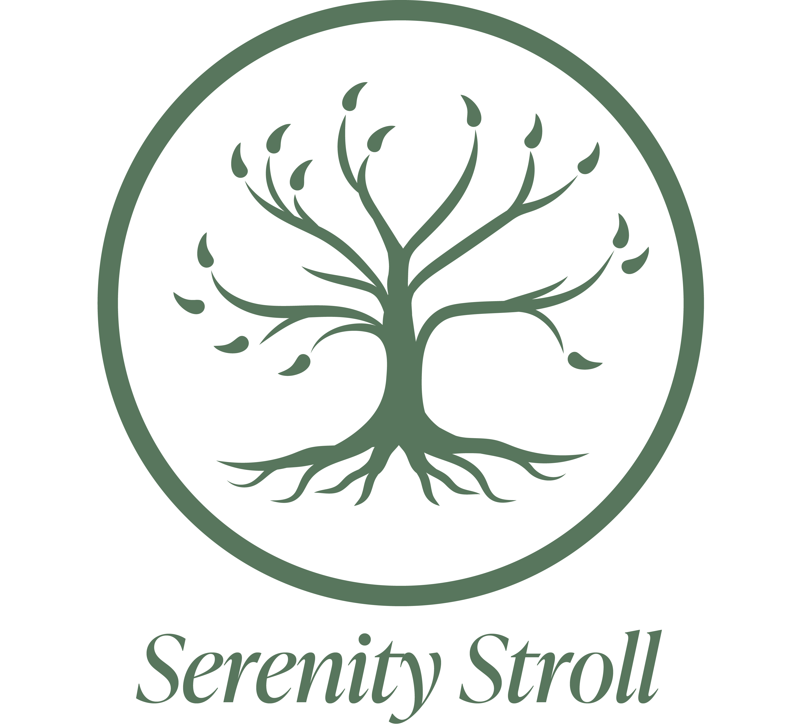

Serenity Stroll is an immersive audio tour that invites listeners to explore the nature of BUas campus.
Blending narration, voices, and ambient sound, this experience offers a calming glimpse into the lives that bloom within Breda University of Applied Sciences.
Every sound is thoughtfully layered to draw you into the garden’s atmosphere.